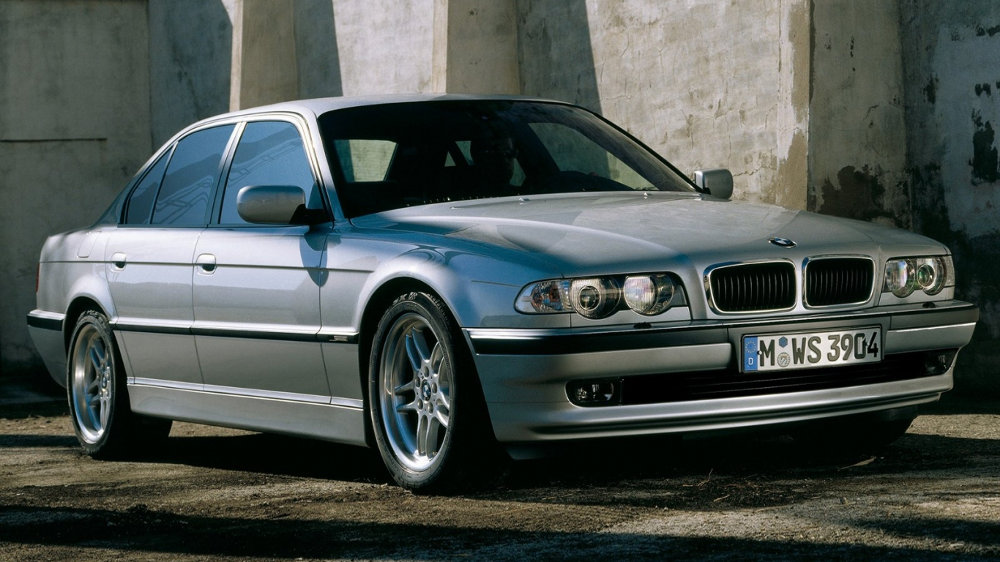

It is the successor to the BMW E3 "New Six" sedan and is currently in its sixth generation.
The 7 Series is BMW's flagship car and is only available in a saloon bodystyle (including limousine models).
It traditionally introduces technologies and exterior design themes
before they trickle down to other models in BMW's lineup.
The first generation of the 7 Series was powered by straight-6 petrol engines
, and following generations have been powered by inline-4,
straight-6, V8 and V12 engines with both natural aspiration
and turbocharging. Since 1995, diesel engines have been optional in the 7 Series.
Unlike the 3 Series and 5 Series saloons, BMW has not produced a M model for the 7 Series (i.e. an "M7"). However, in 2014
an "M Performance" option became available for the 7 Series. But that series sucks ass so much they discontinued it
and said never again.
OGLASI SA SAJTA polovniautomobili.com
| MODEL | GODISTE | PRESAO | MOTOR | CENA |
|---|---|---|---|---|
| BMW 735 | 2002 | 290 318km | Benzin, 3600cm3,200/272 (kW/KS) | 7500 |
| BMW 740M | 2011 | 188 318km | Dizel, 2998cm3,225/306 (kW/KS) | DOGOVOR |
| BMW 730 | 2016 | 130 000km | Dizel, 2998cm3,194/264 (kW/KS) | 49000 € |
| BMW 740 | 2011 | 222 000km | Dizel, 2993cm3,225/306 (kW/KS) | 19999 € |
| NOVO NOVO NOVO | ||||

BEFORE
NOW